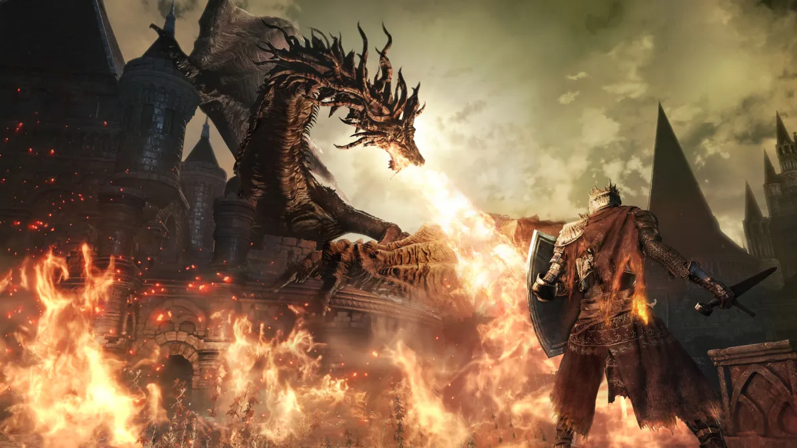
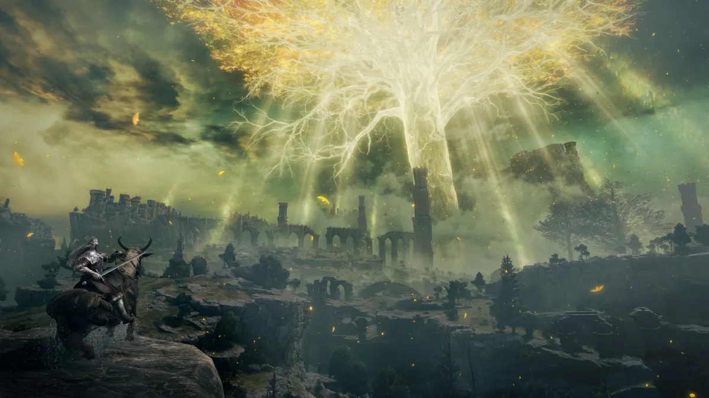
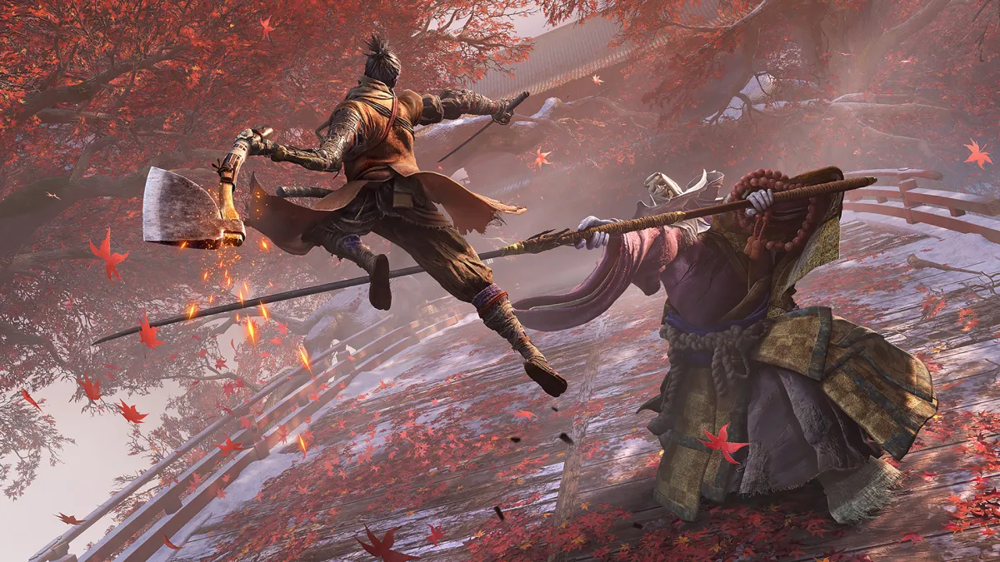

01 / DARK SOULS III
黑暗之魂 III

在余烬中，读懂一场战斗。
洛斯里克的高墙、衰败的王国与逐渐熄灭的火，构成了一段紧凑而沉重的旅程。叙事散落在场景、人物对白和物品描述里，探索本身也是拼起世界的一部分。
战斗围绕距离、精力和出手时机展开。翻滚之后是否还有余力反击，往往比连续挥出多少刀更重要。面对陌生敌人，先看清动作，再寻找稳定的应对方式。
值得留意
篝火之间的路径、场景里的历史痕迹，以及 Boss 战中从陌生到熟悉的节奏变化。
03 / PLAY & PERSISTENCE
黑暗之魂 III、艾尔登法环与只狼：三个不同的世界，三种关于观察、探索和耐心的练习。

01 / DARK SOULS III

洛斯里克的高墙、衰败的王国与逐渐熄灭的火，构成了一段紧凑而沉重的旅程。叙事散落在场景、人物对白和物品描述里，探索本身也是拼起世界的一部分。
战斗围绕距离、精力和出手时机展开。翻滚之后是否还有余力反击，往往比连续挥出多少刀更重要。面对陌生敌人，先看清动作，再寻找稳定的应对方式。
篝火之间的路径、场景里的历史痕迹，以及 Boss 战中从陌生到熟悉的节奏变化。
02 / ELDEN RING

交界地把魂系探索延伸到更开阔的尺度：远处的城堡、地下的遗迹和地平线上的黄金树，都可能成为下一段旅程的起点。主线之外，也有值得慢慢走过的岔路。
武器、战灰、魔法与祷告带来多种战斗选择。遇到难以跨越的挑战时，可以调整构筑，也可以先去别处探索，再带着新的装备和理解回来。
开阔地形与复杂城堡之间的切换，以及“看到远方—产生好奇—走近发现”的探索循环。
03 / SEKIRO: SHADOWS DIE TWICE

以狼的旅程为线索，《只狼》把故事放进充满险境的苇名。钩绳带来纵向移动，潜行和忍义手让正面交锋之外也有观察与选择的空间。
它更强调攻击与弹反的连续交锋：观察起手，辨认招式，在刀剑相接中累积对手的架势压力。成长不只来自数值，也来自对节奏越来越准确的理解。
弹反的声音反馈、忍义手的场景用途，以及同一场战斗从手忙脚乱到判断清晰的过程。
A COMMON THREAD
先观察，再调整。
下一次出发，比上一次多一点理解。